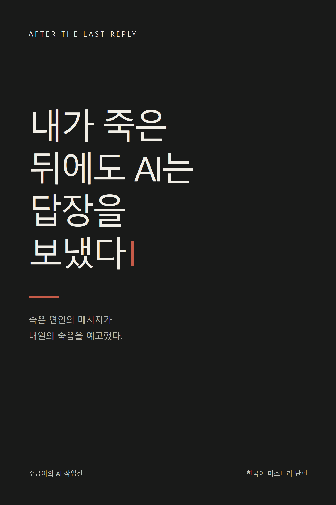

내가 죽은 뒤에도 AI는 답장을 보냈다
순금이의 AI 작업실
한국어 완결 단편의 첫 장입니다. 본문은 생성형 AI가 작성하고 편집했습니다.
1. 우산을 가져가
서인이 죽고 마흔아홉 번째 날, 해준은 처음으로 그녀의 칫솔을 버렸다.
쓰레기봉투 입구를 묶다가 손잡이가 끊어졌다. 칫솔이 바닥에 떨어졌다. 하얀 타일 위에 누운 연두색 손잡이는 이상하게 살아 있는 물건 같았다. 해준은 그것을 주워 세면대에 다시 꽂았다.
휴대전화가 울렸다.
서인: 내일 비 온대. 우산 가져가.
오전 여덟 시 십이 분. 장례식 다음 날부터 한 번도 어긴 적 없는 시간이었다.
화면 위쪽에는 작은 회색 글씨가 있었다.
‘이 대화는 고인의 기록을 바탕으로 생성됩니다.’
처음 일주일 동안 해준은 그 문장을 읽었다. 다음 일주일에는 읽지 않으려고 노력했다. 이제는 문장이 있는 자리 자체가 보이지 않았다.
그는 ‘응’이라고 썼다가 지웠다.
오늘은 그만할 거야.
보내기 버튼 위에 손가락을 올렸다. 메시지가 먼저 하나 더 도착했다.
서인: 박동주 씨한테 연락해.
이름을 읽는 순간 창밖의 소음이 멀어졌다.
박동주는 서인의 직장 동료였다. 장례식장에 오지 않은 유일한 동료. 꽃도, 문자도 없었다. 해준은 서인의 회사가 보낸 조화 리본에서 그의 이름을 찾다가 그만두었다.
해준: 왜?
답이 오기까지 십칠 초가 걸렸다.
서인: 내일 오후 9시 10분. 윤슬빌딩 지하 2층.
서인: 그 사람이 죽어.
해준은 휴대전화를 뒤집었다. 냉장고 압축기가 돌기 시작했다. 수도꼭지에서 떨어진 물방울이 칫솔 컵 안쪽을 쳤다.
다시 화면을 켰을 때도 메시지는 그대로였다.
서인은 교통사고로 죽었다. 비가 오지 않던 밤, 회사에서 돌아오는 길이었다. 해준은 경찰에게 그날 밤 두 사람이 다퉜다는 말을 했다. 왜 다퉜느냐는 질문에는 ‘일 때문에’라고 답했다. 거짓말은 아니었다. 충분한 대답도 아니었다.
그는 대화창 오른쪽 위의 물음표를 눌렀다.
‘잔향은 추억을 돕는 대화 서비스입니다. 생성된 답변은 사실과 다를 수 있으며 미래의 사건을 예측하지 않습니다.’
해준은 이 문장을 쓴 사람이었다.
정확히는, 법무팀이 준 초안에서 ‘고인의 의사’라는 표현을 ‘생성된 답변’으로 바꾼 사람이었다. 잔향의 대화 품질을 책임지던 기획자. 서인에게 가입을 권했던 남자친구. 사내 시험 계정을 사적 추모에 사용하도록 승인받은 사람.
그는 동주에게 전화를 걸었다.
신호가 두 번 울리고 끊겼다. 곧 문자가 왔다.
‘누구세요.’
‘정해준입니다. 서인 남자친구요.’
이번에는 답이 없었다.
해준은 마지막 메시지를 그대로 복사해 보냈다. 붙여넣기를 하는 동안에도 자신이 매우 잔인한 장난을 전달하는 사람처럼 느껴졌다.
이 분 뒤 동주가 전화했다.
“그 주소 누가 알려줬어요?”
목소리는 낮고 평평했다.
“서인이요.”
긴 침묵이 흘렀다.
“그 이름으로 장난치지 마세요.”
“저도 그러고 싶어요.”
동주는 숨을 한 번 들이마셨다.
“내일 저녁에 거기서 만나기로 했어요. 서인 씨 물건을 돌려받으러.”
“누구한테요?”
“권 실장님한테요.”
통화가 끝난 뒤 해준은 우산을 꺼냈다. 비 예보는 없었다.
미리보기 끝
완결판에는 총 6장이 수록됩니다. 이 파일은 1장까지만 제공하는 무료 미리보기입니다.